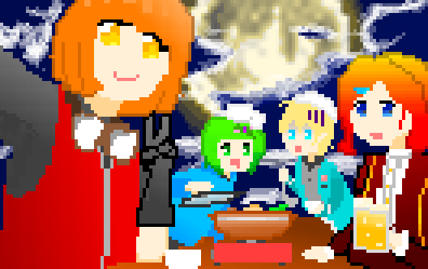

逆引きオブジェクト検索 イメージ
画像内の当たり判定があるオブジェクトにカーソルを重ねると、そのオブジェクトのサムネイル、名前、説明が表示されます。
画像はマウスで自由に移動、拡大・縮小が行えます。ダブルクリックで元サイズに戻ります。
※このサイトは試作品です。イメージとして自分の描いた絵を使用しています。

画像内の当たり判定があるオブジェクトにカーソルを重ねると、そのオブジェクトのサムネイル、名前、説明が表示されます。
画像はマウスで自由に移動、拡大・縮小が行えます。ダブルクリックで元サイズに戻ります。
※このサイトは試作品です。イメージとして自分の描いた絵を使用しています。